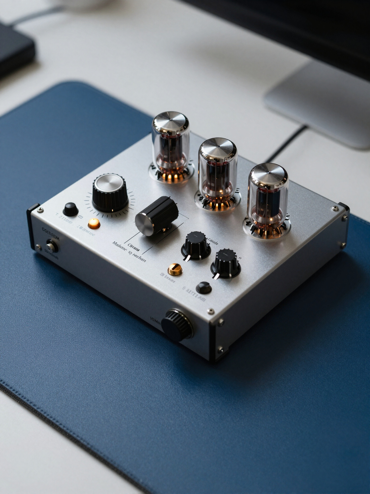
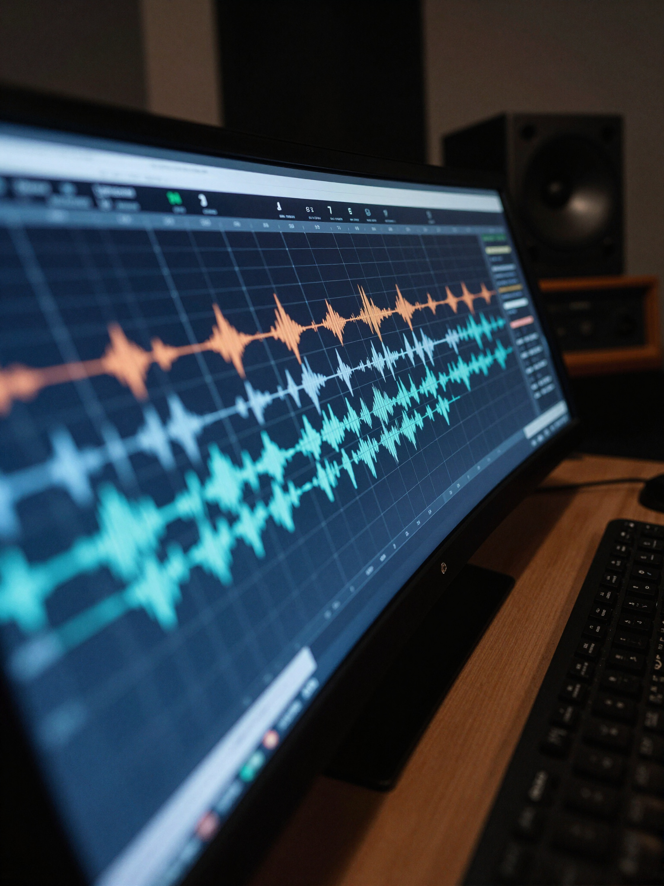
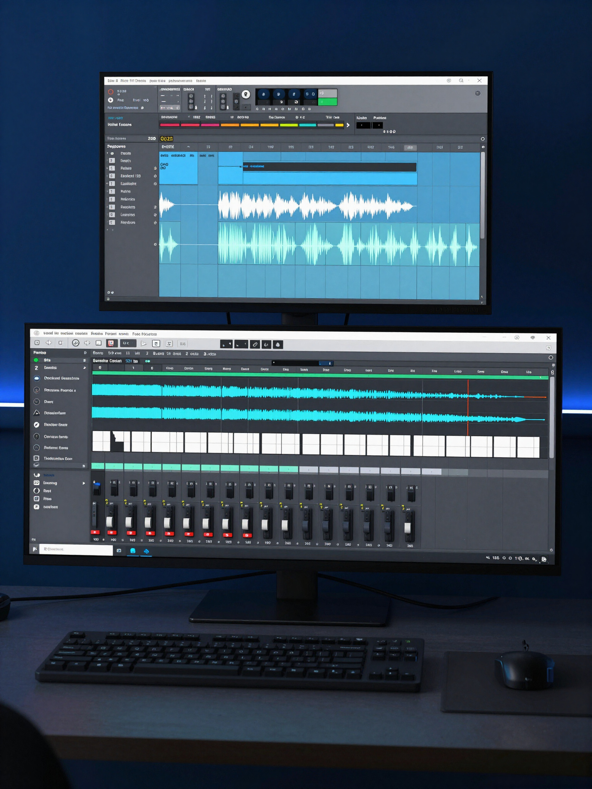
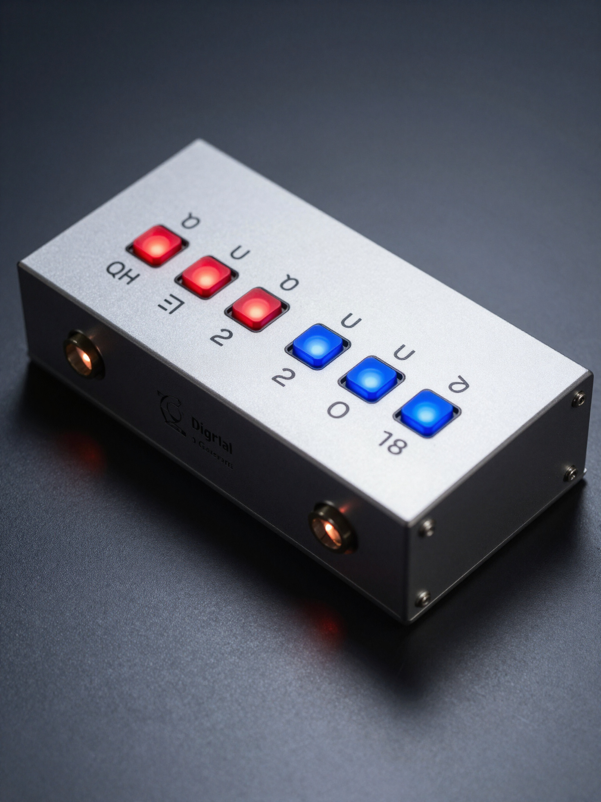

Precision
Detailed decisions in service of the complete record.
Ocean Mastering · Austin, Texas
Scroll to descend
Below the surface
Current
Relationship
Revelation
Ocean Mastering
A calm ocean becomes a signal as the camera descends.
The camera passes physically below the surface into shimmer, flowing currents, and enormous pressure.
The currents remain complex while becoming more supportive and coherent.
The camera turns, ascends through the same layers, and emerges to see the same ocean with greater depth and clarity.
The final step in record completion
Ocean Mastering brings clarity, depth, and reliable translation to finished mixes without erasing their movement, emotion, or identity.
Ten mastered releases · One uninterrupted current
Real projects mastered at Ocean. Select a track, press play, and listen for depth, motion, and translation.
01 / 10 · Now flowing
JFI
Our process
We bridge the gap between a finished mix and a professional release. Dynamic range, frequency balance, width, and sequence are treated as relationships—not isolated problems.
Detailed decisions in service of the complete record.
Greater clarity without erasing the artist’s intent.
Confidence from studio monitors to earbuds and everything between.
Client voices
“The depth and clarity Ocean Mastering brought to my latest LP is unparalleled. It truly feels like the final piece of the artistic puzzle was found.”
“Finally, someone who understands system translation. My tracks sound massive in the club and yet warm on earbuds. Essential for any serious release.”
“Precision and fidelity are secondary to the emotional impact they managed to preserve. Truly engineered with an artist’s ear.”
Our specialized services
Precise dynamic-range control and tonal balance bring individual songs into one intentional, high-fidelity release.
Your music is prepared for consistent, emotionally convincing playback across rooms, systems, platforms, and formats.
Intentional expansion works alongside world-class compression—power and movement without joining the loudness war.
Technical practice
Founded in Austin · 2009
Ocean Mastering was founded by J Fi in 2009. Over the last fifteen years, we have delivered hundreds of music projects. Fulfilling your vision is our passion. We don’t just master; we help engineer each song toward its highest potential.
The work begins with the artist, then moves through the relationships already alive inside the mix.
The studio
Precision tools matter because they let us hear what the record is asking for.




Previous projects
Explore selected releases from the Ocean Mastering archive. Each cover opens into a focused project view.
Start your project
Tell us where the record is now, where it needs to go, and what the release means to you.